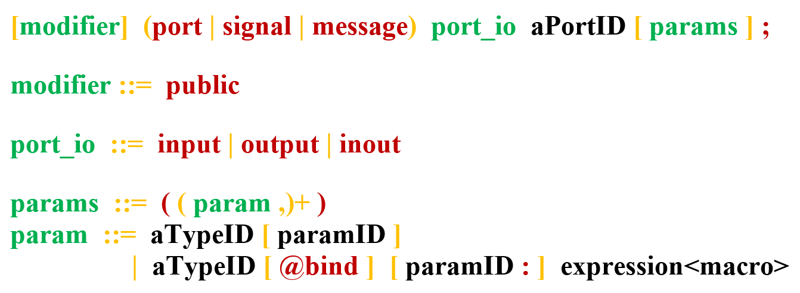

Ports
An interaction point (called "port" in XLIA), enables data transmission during communication operations :
- A port is given a name.
- A port's communication operations can be unilateral i.e. one-way (input or output), or bilateral i.e. two-way (inout).
- A port can carry any one or several types of data. Every data type going through a port must be specified
- A port can be associated with an expression to be sent by default, such as a macro, which is evaluated before transmission.
- A port can be associated, by default, with the left part of an assignment, which will be evaluated during the reception operation, and used to store the data.
General Port Declaration
Every interaction port used in a machine must be previously declared and defined. The general syntax is the following (see BNF syntax) :

Where, in order of apparition :
- the "modifier" which is always public defines the visibility of the object
- the "port_io" defines whether or not we can use this port to do specific tasks :
- with "input" ports we can for instance trigger a transition or import a value for a local variable from something that is outside the parent machine
- with "output" ports, we can for instance convey a local value to what's outside the parent machine
- with "inout" ports we can do both
- in the "params" section, we can list the types of objects the port carries. We can furthermore specify some behaviors when the port handles those values